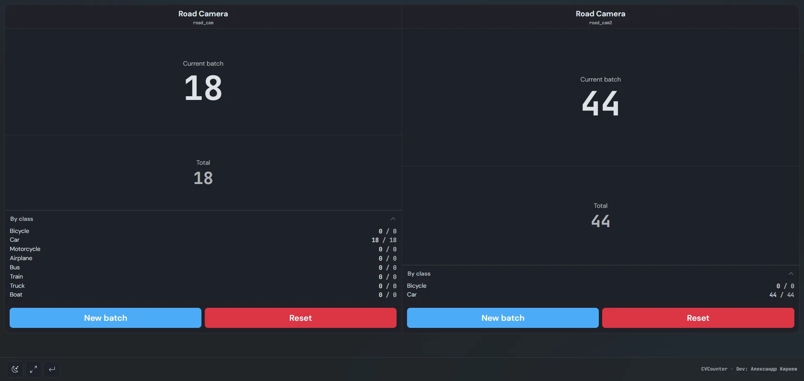

Retail Stores & Shopping Malls
Measure real-time customer footfall through entrance doorways, identify peak shopping hours, and optimize staff schedules based on visitor traffic.
Open-source computer vision system for tracking visitor traffic in stores, shopping centers, office corridors, and entryways. Bidirectional counting, ByteTrack tracking, and turnkey kiosk displays without cloud subscriptions.
Flexible polygonal counting zones cater to high-density pedestrian flow and entry point monitoring.
Measure real-time customer footfall through entrance doorways, identify peak shopping hours, and optimize staff schedules based on visitor traffic.
Optical tally of staff and visitors walking through building lobbies, entrance doorways, and hallways over defined shifts without extra client software.
Count total visitor volume entering pavilions, museum galleries, and event halls, maintaining accurate attendance tallies throughout operating hours.

A transparent breakdown comparing CVCounter against proprietary cloud SaaS and expensive 3D stereo sensor hardware.
| Criterion | CVCounter (Open Source) | Cloud SaaS Solutions | Hardware 3D Sensors |
|---|---|---|---|
| Pricing | Free (AGPL-3.0) | Monthly subscription ($30-$80/camera) | Upfront hardware ($600-$1,500/unit) |
| Data Privacy (GDPR) | 100% On-Premises | Video streams sent to third-party cloud | Local, but proprietary closed protocol |
| Camera Compatibility | Any standard RTSP / USB camera | Restricted certified camera list | Proprietary hardware only |
| Tracking Accuracy | ByteTrack (occlusion resistant) | Basic centroid tracking | Infrared / stereo-depth |
| Zone Customization | Arbitrary polygons, rotation, scaling | Rigid straight horizontal/vertical lines | Narrow cone beneath the sensor |
| Reporting & Integrations | Printable A4, CSV, JSON, REST API, Webhooks | Locked behind web dashboard | Requires proprietary vendor SDK |
From initial download to live footfall reporting in less than 10 minutes.
Run install.bat (Windows) or ./install.sh (Linux/macOS) with automatic GPU auto-detection.
Enter the RTSP URL of your existing security camera or choose a USB webcam in the web interface.
Draw polygonal entrance and exit detection zones in the browser, choose the person class, and adjust confidence.
View live traffic counts on any browser or TV display, record incident video, and generate shift reports.
Common questions regarding people counting system implementation.
Yes. CVCounter connects to standard IP surveillance cameras using the RTSP protocol (H.264/H.265) as well as USB webcams and video files without requiring special camera hardware.
CVCounter uses the state-of-the-art ByteTrack multi-object tracker. Each detected individual is assigned a unique trajectory ID that persists even during occlusions or when people cross paths.
No. CVCounter runs 100% on-premises on your local server or mini PC. Video streams never leave your private local network, ensuring complete GDPR and corporate privacy compliance.
An installation height between 2.8 and 4.5 meters (9–15 ft) with an angle of 45°–60° toward movement, or a directly downward top-down view, yields optimal accuracy. A resolution of 720p or 1080p at 15–25 FPS is ideal.